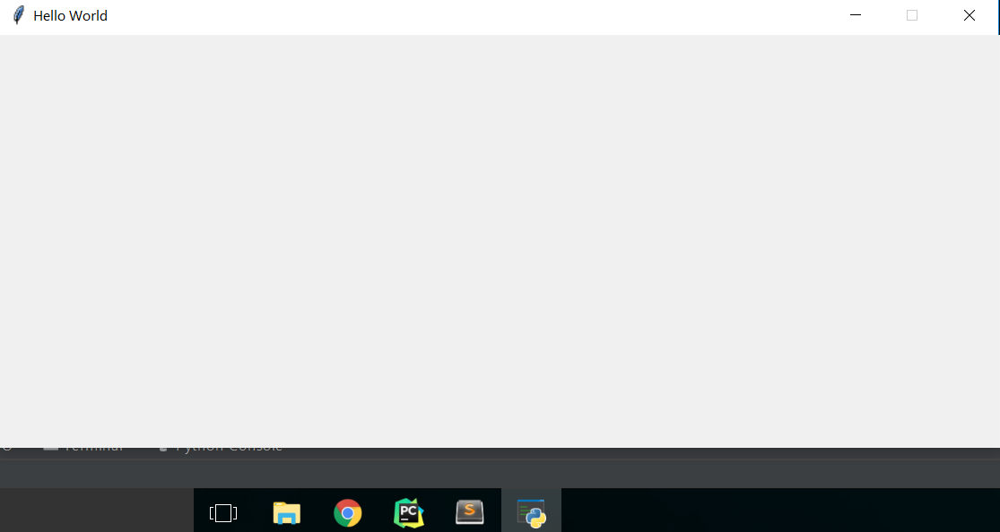
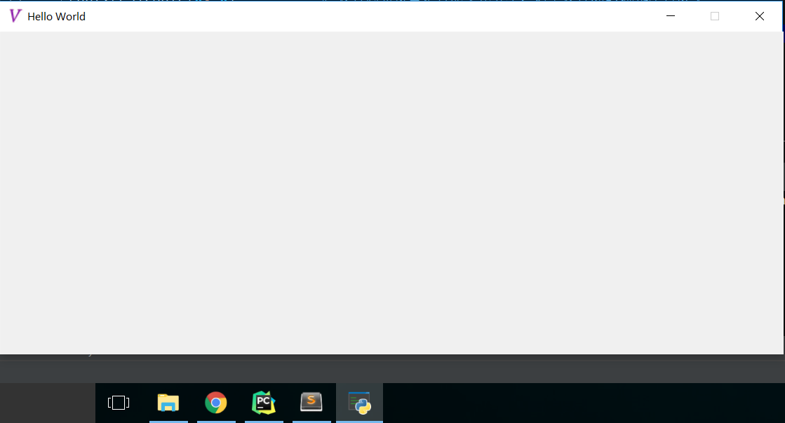
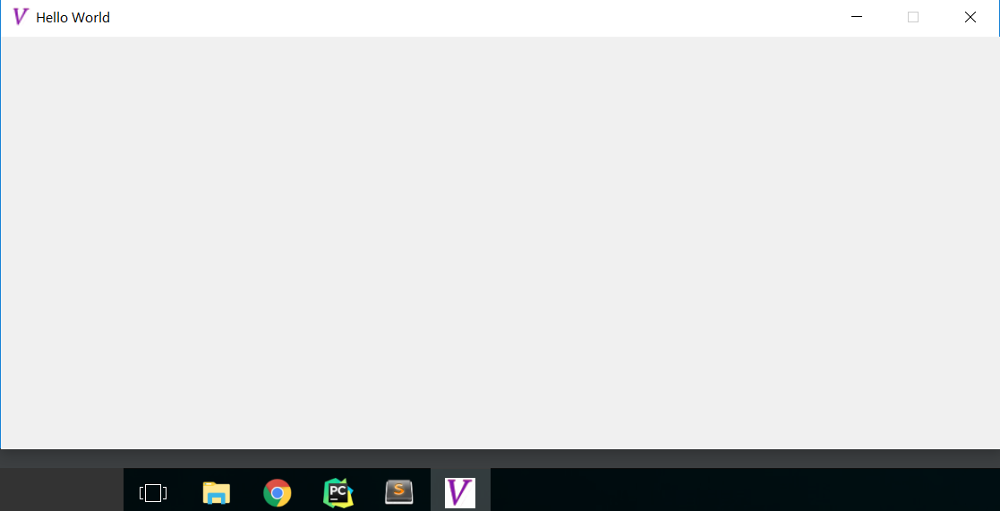

上文《Hello World，编写一个Tkinter程序需要哪些基本步骤？》介绍了创建Tkinter应用的四个步骤，其中根窗口设置比较简单。在前面的例子中我们设置了窗口的title、窗口的尺寸和窗口是否能变化等，代码如下：
import tkinter
root = tkinter.Tk()
root.title("Hello World") # 设置画布窗口的title
root.geometry("800x330") # 设置画布窗口的尺寸
root.resizable(0, 0) # 设置画布窗口是否能变化大小，这里设置X和Y轴都不可改变
root.mainloop()
注意，在上面窗口尺寸设置geometry中"800x330"，中间是一个小写的“x”。如果要同时设置窗口在屏幕上的位置，可以使用"800x330+200+100"这样的参数，"800x330"后面的"+200+100"部分，分别表示窗口左上角与屏幕左侧和顶部的距离。如果设置成"-200-100"则表示窗口右下角与屏幕右侧和底部的距离。另外，resizable()可以使用1,0，也可以使用True, False作为参数。
根窗口除了这些基本的设置，这里另外介绍两个常见功能的实现：
程序启动时窗口最大化
有时候，我们希望程序启动时能最大化窗口，那么在Tkinter程序中是怎么实现的呢？
1、其实上面的root.geometry()，就是设置启动时窗口大小的，因此只要我们能获取窗口的尺寸，然后赋值给这个函数就可以了。
可以使用root.maxsize()或者root.winfo_screenwidth()、root.winfo_screenheight()获取窗口尺寸。如下：
the_width, the_height = root.maxsize()
或者
the_width = root.winfo_screenwidth()
the_height = root.winfo_screenheight()
接下来，赋值给root.geometry()：
root.geometry("%dx%d" %(the_width, the_height))
上面的方式在Windows、MacOS和Linux系统上都适合，平时也最常用。
2、如果只需要在Windows系统下实现最大化窗口，可以调用root.state()函数，直接设置最大化窗口：
root.state("zoomed")
这里的窗口状态函数state，可以有三个状态，分别是：
- "zoomed" - 窗口最大化
- "normal" - 正常
- "icon" - 窗口最小化
这种方式只在Windows系统上适用。
3、另外，还可以使用root.attributes()设置窗口的全屏属性为真，来实现窗口最大化。如下：
root.attributes("-fullscreen", True)
这种方法在各种系统下都能适用，但是这种全屏方法会导致窗口的标题栏也没有了，实践中很少会用到。
程序窗口图标设置
缺省情况下，我们编写的Tkinter程序在Windows系统下运行时，程序窗口图标是Tkinter内置的羽毛图标，而下方任务栏上是Python的图标。见下图（此处运行的就是本文开头的例子）：

我们可以通过root.wm_iconbitmap()或者root.iconbitmap()函数来设置程序窗口图标。首先需要将对应的ico图标文件（我这里是vincent.ico文件）放在Tkinter程序目录下，然后在root.mainloop()前增加一句代码：
root.wm_iconbitmap("vincent.ico")
即可得到运行结果：

这样程序图标变为我们自己定义的ico文件，但是任务栏上的Python图标没有改变。可以通过添加如下代码设置：
import ctypes
myappid = "company.product.version" # 这里可以设置任意文本
ctypes.windll.shell32.SetCurrentProcessExplicitAppUserModelID(myappid)
最后的完整代码为：
import tkinter
import ctypes
myappid = "company.product.version" # 这里可以设置任意文本
ctypes.windll.shell32.SetCurrentProcessExplicitAppUserModelID(myappid)
root = tkinter.Tk()
root.title("Hello World") # 设置画布窗口的title
root.geometry("800x330") # 设置画布窗口的尺寸
root.resizable(0, 0) # 设置画布窗口是否能变化大小，这里设置X和Y轴都不可改变
root.wm_iconbitmap('vincent.ico') # 设置程序图标
root.mainloop()
运行结果如下：

Hello World，编写一个Tkinter程序需要哪些基本步骤？
通过Hello World程序介绍编写Tkinter程序的四个基本步骤：创建并设置根窗口、选择要显示的组件并进行对应设置、组件的布局管理和给组件编写交互功能。
read morePython自带的GUI库Tkinter是否值得学习？
Python语言可以用在很多方面，网站开发、数据分析、运营维护、游戏开发等等，那么桌面应用程序GUI呢？其实Python标准库里自带Tkinter就是干这个的。相比PyQT、wxPython等等，Tkinter有哪些优势和不足，是否值得学呢？
read more